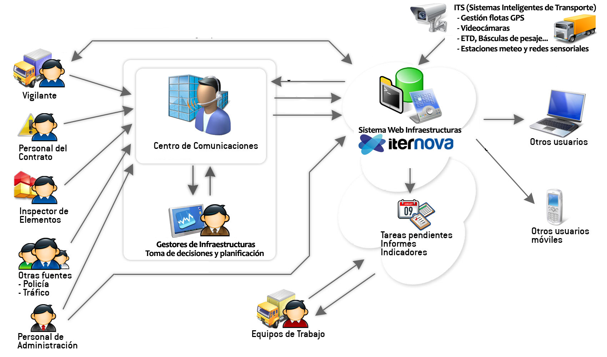

Con la colaboración de
¿Qué es SmartRoads?
- Sistema de Gestión Web de Infraestructuras
- Implantado en Demarcaciones de Carreteras del Estado de España (Aragón, Comunidad Valenciana, La Rioja, Comunidad de Murcia, Soria... ), Dirección General de Tráfico (España), varias diputaciones provinciales y Comunidades Autónomas (Aragón) y varias concesionarias de autopistas y sectores de conservación.
- También nos encontramos en las principales autopistas de México (Atlacomulco-Maravatío, Sinaloa, Arco Norte...). En expansión a otros países LATAM.
- Más de 18000 Km gestionados
SmartRoads se complementa con la plataforma SmartFacilities (gestión de instalaciones) y SmartCities (gestión de ciudades inteligentes) de ITERNOVA
¿Qué es SmartRoads?
- Premio ACEX 2012 a la Seguridad en Conservación
- Tecnocarreteras.es - Proyecto para dar a conocer tecnologías relacionadas con infraestructuras y el sistema SmartRoads
Entorno SmartRoads

Sistema Modular >> Gestión Integral
| Bloque / Actividad | Objetivos | Módulos Implicados |
|---|---|---|
| Conservación Ordinaria / Mantenimiento | Conservar elementos de la carretera en estado óptimo | Inventariado de elementos Inspecciones de elementos |
| Rehabilitación | Mantener un firme adecuado para la circulación | Inventariado de firmes Agenda de rehabilitación Estudios / Auscultaciones |
| Vialidad | Permitir la circulación fluida de vehículos por la vía | Agenda de Vialidad Protocolos Herramientas ITS (Flotas GPS, videocámaras, estaciones meteo, ETD, PMV...) |
| Seguridad Vial | Determinar zonas peligrosas | Accidentalidad Indicadores de Seguridad Vial |
| Gestión económica | Planificar y conocer inversiones y costes | Gestión Económica Planificación y Seguimiento |
| Información adicional | Datos adicionales requeridos para el funcionamiento del resto de módulos del sistema | Geometría de la carretera Contratos, Sectores, Carreteras, Puntos con Restricción... |
| Otros módulos de gestión | Gestionar información de proyectos, ofrecer servicios a los ciudadanos, realizar seguimiento de operaciones... | Aplicaciones móviles Gestor de Expedientes Gestor documental Gestión de almacenes Ventanilla virtual |
SmartRoads
Gestor de Expedientes
- Realizar seguimiento de expedientes
- Registro de entrada / salida de documentos
- Ventanilla virtual (pública)
- Generación automátizada de documentos
- Configurable a necesidades de cada cliente
Thank you!
¿Quieres saber algo más sobre SmartRoads?